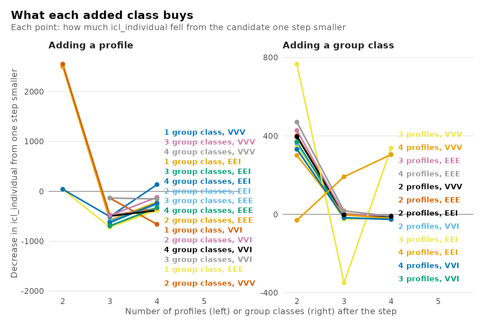
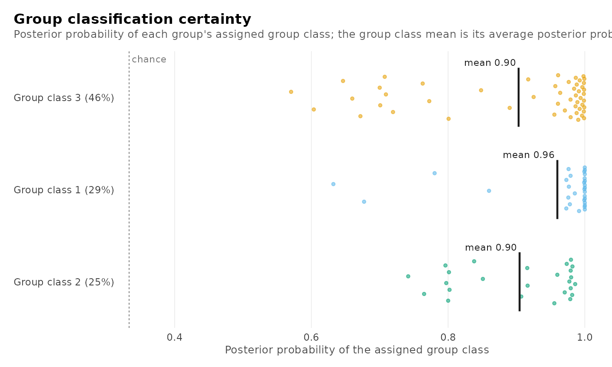
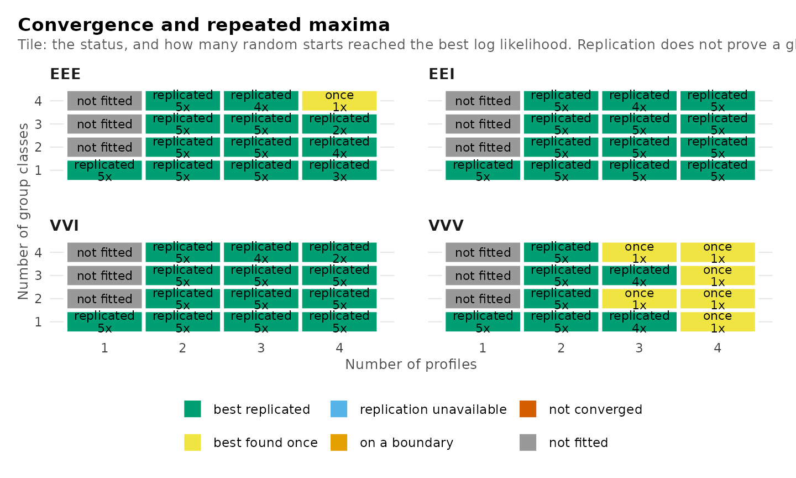
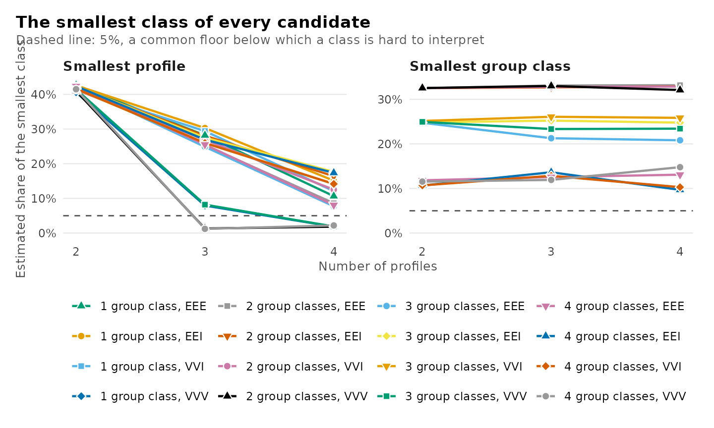
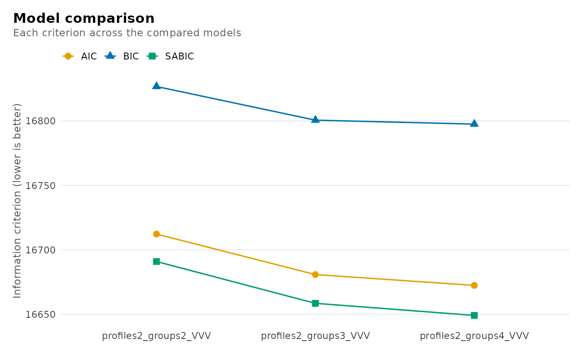

Model selection: the evidence for the number of classes
Mohammed Saqr
University of Eastern FinlandSonsoles López-Pernas
University of Eastern FinlandSource:
vignettes/articles/model-selection.Rmd
model-selection.RmdIn finite mixture modelling, the number of latent classes is not known a priori and is not a parameter of the model; it must be determined by comparing models fitted with different numbers of classes. No single statistic identifies the correct number: information criteria, likelihood-based tests and indices of classification quality each have known limitations, and they frequently disagree (Nylund et al., 2007). Class enumeration is therefore an inferential judgement that integrates several sources of evidence and is reported transparently. This guide describes each source of evidence that latents computes for a set of candidate models: its definition, its interpretation, and the conditions under which it is unreliable. It then outlines how these sources are combined into a defensible and reproducible decision. A complete applied example is given in Class enumeration.
Latent profile and latent class analysis are person-centred methods. Rather than describing the average relationship among variables across the whole sample, they identify subgroups of individuals who share a pattern of responses, and thereby capture heterogeneity that variable-centred methods average away (Saqr et al., 2024). Model-based clustering with finite Gaussian mixtures provides the statistical framework for latent profile analysis, and Scrucca et al. (2024) introduce its estimation, its covariance structures and the selection of the number of profiles in R. Because the subgroups are defined by the model rather than observed, their number has to be decided from the data, which is the subject of this guide.
The evidence considered here addresses five distinct questions, summarized below together with the functions that report it.
| Question | Evidence | Functions |
|---|---|---|
| Which candidate balances fit and size best? | Information criteria and their minima |
as.data.frame(), get_results(x, "best"),
plot_enumeration(x)
|
| Where do added classes stop paying off? | Changes between neighbouring candidates and the knee of each curve |
get_results(x, "deltas"),
get_results(x, "knees"),
plot_selection(x, what = "deltas"),
plot_selection(x, what = "heatmap")
|
| Are the classes distinct? | Entropy, average posterior probability, odds of correct classification |
get_results(x, "classification"),
plot_selection(x, what = "diagnostics")
|
| Can the estimate be trusted? | Convergence, boundary estimates, replication of the best likelihood, the smallest class |
plot_selection(x, what = "trust"),
plot_selection(x, what = "smallest")
|
| Is one more class supported? | The bootstrap likelihood ratio test of neighbouring candidates | bootstrap_lrt() |
plot_selection(x) displays the evidence of the second,
third and fourth rows jointly, and compare_models()
tabulates selected candidates side by side.
The candidates
The examples use course_engagement, in which course
enrolments are nested within students and each enrolment is described by
five standardized indicators of activity. A model is fitted for every
combination of one to four profiles, one to four group classes and the
four basic covariance structures (EEI, VVI,
EEE and VVV), the grid analysed in Class enumeration. Five random starts per
candidate are used to limit computation; applied analyses should use at
least ten, because replication of the maximum likelihood across starts
is itself part of the evidence. The examples below illustrate each
source of evidence on this grid; the Class
enumeration article interprets the same results and reaches a
decision.
activity <- c("browse", "lectures", "forum_read", "forum_post", "attendance")
models <- enumerate_classes(course_engagement, activity, "student",
n_profiles = 1:4, n_group_classes = 1:4,
n_starts = 5, seed = 1)
#> 7 of 52 candidates reached their best log likelihood from one start only (profiles4_groups4_EEE, profiles4_groups1_VVV, profiles3_groups2_VVV, profiles4_groups2_VVV, profiles4_groups3_VVV, profiles3_groups4_VVV, ...); refit those you consider with more starts.The grid comprises 64 candidates, of which 52 were estimated. A model
with one profile and several group classes is not identified, because
group classes defined over a single profile cannot differ; such
candidates are listed but not estimated. Each candidate is labelled by
its numbers of classes and its structure (e.g.,
profiles2_groups3_VVV for two profiles, three group classes
and a full covariance per profile), and the functions below accept this
label.
Before fitting: starts, scaling and missing values
Three analytic decisions precede estimation. Each is passed through
the ... argument of enumerate_classes(),
enumerate_lpa() and enumerate_lca(), so that
it applies identically to every candidate, and each should be reported
alongside the selected number of classes.
Random starts
The likelihood of a finite mixture model is typically multimodal, and
the EM algorithm converges to a local maximum determined by its starting
values. n_starts sets the number of random starts per
candidate; increasing it reduces the probability that a candidate is
reported at a local rather than the global maximum. A solution at a
local maximum usually separates its classes less well, so re-estimation
with more starts frequently increases entropy and AvePP. When more
starts are required, the entire grid is re-estimated with the same
number; re-estimating only the candidates of interest would confer on
them an advantage in likelihood and separation that the remaining
candidates were not given.
models <- enumerate_classes(course_engagement, activity, "student",
n_profiles = 1:4, n_group_classes = 1:4,
n_starts = 20, seed = 1)Additional starts also make a degenerate solution more likely to be
found when a candidate has more profiles than the data support: one
profile collapses on a single observation, with every variance at its
lower bound (min_variance). The Gaussian likelihood of such
a profile increases without limit as its variances shrink, so its value,
and every criterion computed from it, is determined by
min_variance rather than by the data, and BIC can favour
one profile too many as a result. In a simulation with 500 starts per
candidate, this occurred in two of 29 datasets; with ten or twenty
starts it was rare. Such candidates carry boundary = TRUE
in the table of candidates. boundary = "exclude" sets aside
every start with a variance at its lower bound and retains the best of
the remaining starts; the default, "allow", retains the
highest likelihood, as Mplus does. The option is advisable when many
starts are used, and it has no effect on categorical indicators, which
have no variances. A spurious profile need not reach the bound: a few
nearly coincident observations can give it variances close to zero. A
candidate with a profile that has fewer effective members than its own
means and variances is therefore reported by a
latents_thin_profiles warning naming the affected profile
and its effective membership.
models <- enumerate_classes(course_engagement, activity, "student",
n_profiles = 1:4, n_group_classes = 1:4,
n_starts = 200, boundary = "exclude", seed = 1)Centring and scaling
centering subtracts a mean and scaling
divides by a standard deviation, each computed at one of two levels:
over all observations ("grand") or within each group
("person"). Combined, they yield the conventional z-scores.
Grand-mean standardization
(centering = "grand", scaling = "grand") expresses each
indicator in sample standard deviations; within-person standardization
(centering = "person", scaling = "person") expresses each
observation as a deviation from its own group’s mean in units of that
group’s standard deviation, so that the profiles describe within-person
fluctuation rather than between-person level.
Under the covariance structures EEI, VEI,
EVI, VVI, EEE, VEE,
EVV and VVV, whose constraints are preserved
when each indicator is rescaled, grand-mean scaling is a
reparameterization of the unconstrained likelihood. Corresponding optima
have the same class membership, entropy and AvePP when bounds and priors
transform consistently. The package’s absolute variance floor is
expressed in the fitted units, so an active floor can change
classification after rescaling; numerical search can also reach
different local optima. The spherical structures EII and
VII constrain all indicators to a common variance, so that
an unscaled indicator with a large range would dominate the
classification; under these structures the indicators should be
standardized beforehand.
srl_indicators <- c("cognitive_strategies", "intrinsic_value",
"self_efficacy", "self_regulation", "test_anxiety")
spherical <- enumerate_lpa(srl, srl_indicators, n_profiles = 2:4,
model = "EII", centering = "grand",
scaling = "grand", n_starts = 5, seed = 1)
get_results(spherical, "best")
#> criterion convention candidate n_profiles n_group_classes model value
#> 1 aic <NA> profiles4 4 1 EII 3377
#> 2 kic <NA> profiles4 4 1 EII 3404
#> 3 bic groups profiles4 4 1 EII 3466
#> 4 bic individuals profiles4 4 1 EII 3466
#> 5 sabic groups profiles4 4 1 EII 3390
#> 6 sabic individuals profiles4 4 1 EII 3390
#> 7 caic groups profiles4 4 1 EII 3490
#> 8 caic individuals profiles4 4 1 EII 3490
#> 9 awe groups profiles4 4 1 EII 3784
#> 10 awe individuals profiles4 4 1 EII 3784
#> 11 icl groups profiles4 4 1 EII 3575
#> 12 icl individuals profiles4 4 1 EII 3575
#> 13 clc groups profiles4 4 1 EII 3438
#> 14 clc individuals profiles4 4 1 EII 3438Because scaling shifts the log likelihood by a constant, information criteria are comparable only among candidates estimated under the same centring and scaling, as is the case within a single grid.
Missing values
With missing = "fiml", the likelihood of each
observation is evaluated over its observed indicators, without
imputation; under the missing-at-random assumption and a correctly
specified, identifiable model, this supports consistent estimation; it
does not guarantee finite-sample unbiasedness. An observation with all
indicators missing contributes nothing to the likelihood, and its
posterior probability equals the prior implied by its group; it is
therefore not classified. Following Mplus, such observations are
excluded from the sample size of the individual-level information
criteria, from entropy and AvePP, from the classification tables and
from the effective class counts; n_informative records the
number retained, and the printed fit reports the number excluded. Groups
in which no observation has an observed indicator are excluded from the
group-level sample size and statistics on the same grounds
(n_informative_groups), whereas a group with at least one
observed row is retained. Partially observed rows remain in every
statistic: they are classified, with correspondingly greater
uncertainty, from the indicators available. Setting
drop_empty = FALSE includes empty rows in classification
summaries and empty groups in group-based criteria. Profile/class models
keep informative rows for individual-based criteria; transition models
count all positive-weight rows under this setting. These choices leave
the estimated likelihood unchanged but can change reported diagnostics
and criteria.
set.seed(3)
empty <- sample(nrow(course_engagement), 150)
partial <- setdiff(sample(nrow(course_engagement), 150), empty)
incomplete <- transform(course_engagement,
browse = replace(browse, empty, NA),
lectures = replace(lectures, empty, NA),
forum_read = replace(forum_read, empty, NA),
forum_post = replace(forum_post, empty, NA),
attendance = replace(attendance, c(empty, partial), NA))
incomplete_fit <- multilpa(incomplete, activity, "student", n_profiles = 3,
n_group_classes = 2, model = "VVI",
missing = "fiml", n_starts = 3, seed = 1)
get_results(incomplete_fit, "entropy")
#> level n_classes n_units entropy_sum relative_entropy
#> 1 individuals 3 1272 321.58 0.770
#> 2 groups 2 106 5.42 0.926Individual-level entropy is computed over 1272 observations: the 1,422 enrolments less the 150 with no observed indicator. Deleting those rows from the data yields identical estimates, likelihood and classification statistics. Deleting partially observed rows, by contrast, alters the sample and, where missingness depends on observed values, biases the estimated profiles.
Information criteria
Definitions
Each criterion adds a penalty to the deviance, -2L,
where L is the maximized log likelihood. Let q
denote the number of free parameters, n the sample size,
and EN = -sum(p log p) the classification entropy, summed
over all units and classes of the posterior probabilities
p:
| Criterion | Formula | Penalty depends on | Reference |
|---|---|---|---|
aic |
-2L + 2q |
parameters only | Akaike (1974) |
kic |
-2L + 3(q + 1) |
parameters only | Cavanaugh (1999), in the form tidyLPA computes; his general
-2L + 3q differs by a constant 3 |
bic |
-2L + q log(n) |
sample size | Schwarz (1978) |
sabic |
-2L + q log((n + 2) / 24) |
sample size | Sclove (1987) |
caic |
-2L + q (log(n) + 1) |
sample size | Bozdogan (1987) |
icl |
-2L + q log(n) + 2 EN |
sample size and classification | Biernacki, Celeux and Govaert (2000) |
awe |
-2(L - EN) + 2q (1.5 + log(n)) |
sample size and classification | Banfield and Raftery (1993) |
clc |
-2L + 2 EN |
classification only | Biernacki and Govaert (1997) |
Smaller values indicate a better trade-off between fit and
complexity. The penalty per parameter is 2 for AIC, 3 for KIC,
log((n + 2) / 24) for SABIC, log(n) for BIC
and log(n) + 1 for CAIC. SABIC has a smaller per-parameter
penalty than AIC until n exceeds
24 * exp(2) - 2 (approximately 175.34); compare the actual
penalties at the relevant sample size. Heavier penalties favour fewer
classes. ICL and AWE additionally penalize classification uncertainty,
since overlapping classes increase EN; they consequently
favour fewer and better-separated classes than BIC. CLC carries no
per-parameter penalty, only the entropy term, and may favour many
classes when these are well separated and few when they are not. CLC is
defined here, as are ICL and AWE, on the entropy sum; some software
reports a variant based on relative entropy, which is bounded by one and
therefore imposes almost no penalty, and the two are not comparable.
Two conventions for the sample size
In a two-level model the sample size may be defined as the number of
groups (here, 106 students) or the number of observations (here, 1,422
enrolments). latents reports every sample-size-dependent criterion under
both conventions: columns ending in _groups use the number
of groups and columns ending in _individual the number of
observations. Neither constitutes a uniquely correct multilevel BIC;
each is a stated convention, and an analysis adopts one and applies it
to every candidate. AIC and KIC do not depend on the sample size.
The entropy EN of ICL, AWE and CLC is the same under
both conventions: the soft entropy of the complete-data classification,
which in a two-level model is the group class of every student together
with the profile of every enrolment. It is the entropy of the
group-class posteriors plus, within each group class, the entropy of the
profile posteriors (the complete-data entropy of Biernacki et al., 2000,
applied to both levels). With one group class it is the entropy of the
profile posteriors. The two conventions therefore differ only in
n, and in a single-level model, where the two sample sizes
coincide, every criterion is identical under both. A transition model
from lta() is the exception: its profiles form a Markov
chain within a person, and its criteria charge one level’s entropy per
convention.
The table of every candidate
as.data.frame() returns one row per candidate,
containing every criterion under both conventions together with the log
likelihood, the number of parameters, summaries of classification
quality and diagnostics of estimation.
The 16 candidates with the VVV structure:
subset(as.data.frame(models), model == "VVV")
#> candidate n_profiles n_group_classes model log_likelihood n_parameters aic kic
#> 49 profiles1_groups1_VVV 1 1 VVV -8710 20 17460 17483
#> 50 profiles2_groups1_VVV 2 1 VVV -8490 41 17061 17105
#> 51 profiles3_groups1_VVV 3 1 VVV -8472 62 17067 17132
#> 52 profiles4_groups1_VVV 4 1 VVV -8434 83 17033 17119
#> 53 profiles1_groups2_VVV 1 2 VVV NA NA NA NA
#> 54 profiles2_groups2_VVV 2 2 VVV -8313 43 16712 16758
#> 55 profiles3_groups2_VVV 3 2 VVV -8289 65 16708 16776
#> 56 profiles4_groups2_VVV 4 2 VVV -8261 87 16696 16786
#> 57 profiles1_groups3_VVV 1 3 VVV NA NA NA NA
#> 58 profiles2_groups3_VVV 2 3 VVV -8295 45 16681 16729
#> 59 profiles3_groups3_VVV 3 3 VVV -8275 68 16686 16757
#> 60 profiles4_groups3_VVV 4 3 VVV -8237 91 16656 16750
#> 61 profiles1_groups4_VVV 1 4 VVV NA NA NA NA
#> 62 profiles2_groups4_VVV 2 4 VVV -8289 47 16672 16722
#> 63 profiles3_groups4_VVV 3 4 VVV -8262 71 16666 16740
#> 64 profiles4_groups4_VVV 4 4 VVV -8231 95 16652 16750
#> bic_groups bic_individual sabic_groups sabic_individual caic_groups caic_individual awe_groups
#> 49 17514 17565 17450 17502 17534 17585 17667
#> 50 17170 17277 17041 17147 17211 17318 17732
#> 51 17232 17393 17036 17196 17294 17455 18344
#> 52 17254 17470 16992 17206 17337 17553 18315
#> 53 NA NA NA NA NA NA NA
#> 54 16827 16938 16691 16802 16870 16981 17346
#> 55 16881 17050 16676 16844 16946 17115 17593
#> 56 16927 17153 16652 16877 17014 17240 18366
#> 57 NA NA NA NA NA NA NA
#> 58 16801 16917 16658 16775 16846 16962 17360
#> 59 16867 17044 16652 16828 16935 17112 17958
#> 60 16899 17135 16611 16846 16990 17226 18195
#> 61 NA NA NA NA NA NA NA
#> 62 16798 16920 16649 16770 16845 16967 17380
#> 63 16855 17040 16631 16814 16926 17111 17636
#> 64 16905 17151 16604 16849 17000 17246 17910
#> awe_individual icl_groups icl_individual clc_groups clc_individual profile_entropy group_entropy
#> 49 17771 17514 17565 17420 17420 NA NA
#> 50 17945 17418 17524 17226 17226 0.875 NA
#> 51 18666 17869 18030 17580 17580 0.796 NA
#> 52 18746 17679 17894 17292 17292 0.892 NA
#> 53 NA NA NA NA NA NA NA
#> 54 17570 17017 17128 16816 16816 0.906 0.942
#> 55 17931 17095 17264 16792 16792 0.933 0.943
#> 56 18818 17699 17925 17293 17293 0.805 0.946
#> 57 NA NA NA NA NA NA NA
#> 58 17593 17015 17132 16805 16805 0.909 0.816
#> 59 18312 17437 17614 17120 17120 0.828 0.824
#> 60 18667 17497 17734 17073 17073 0.855 0.837
#> 61 NA NA NA NA NA NA NA
#> 62 17624 17020 17142 16801 16801 0.912 0.797
#> 63 18005 17092 17276 16761 16761 0.940 0.801
#> 64 18403 17182 17429 16739 16739 0.936 0.830
#> avepp_min avepp_max avepp_mean avepp_below group_avepp_min group_avepp_max group_avepp_mean
#> 49 NA NA NA NA NA NA NA
#> 50 0.959 0.971 0.965 0 NA NA NA
#> 51 0.665 0.956 0.833 1 NA NA NA
#> 52 0.630 0.958 0.837 1 NA NA NA
#> 53 NA NA NA NA NA NA NA
#> 54 0.973 0.978 0.976 0 0.971 0.993 0.982
#> 55 0.796 0.976 0.915 1 0.979 0.990 0.985
#> 56 0.802 0.974 0.856 0 0.962 0.995 0.979
#> 57 NA NA NA NA NA NA NA
#> 58 0.974 0.978 0.976 0 0.903 0.960 0.923
#> 59 0.650 0.973 0.841 1 0.878 0.955 0.920
#> 60 0.649 0.967 0.838 1 0.881 0.976 0.928
#> 61 NA NA NA NA NA NA NA
#> 62 0.977 0.978 0.977 0 0.830 0.925 0.874
#> 63 0.830 0.979 0.928 0 0.851 0.910 0.879
#> 64 0.785 0.976 0.887 1 0.868 0.961 0.921
#> group_avepp_below converged boundary min_standardized_eigenvalue min_gaussian_mass
#> 49 NA TRUE FALSE 0.279287 1422.0
#> 50 NA TRUE FALSE 0.269614 577.4
#> 51 NA TRUE FALSE 0.120317 112.7
#> 52 NA TRUE FALSE 0.000276 26.1
#> 53 NA FALSE NA NA NA
#> 54 0 TRUE FALSE 0.271042 583.2
#> 55 0 TRUE FALSE 0.011064 18.6
#> 56 0 TRUE FALSE 0.001958 26.3
#> 57 NA FALSE NA NA NA
#> 58 0 TRUE FALSE 0.272051 589.5
#> 59 0 TRUE FALSE 0.120469 116.5
#> 60 0 TRUE FALSE 0.002424 26.9
#> 61 NA FALSE NA NA NA
#> 62 0 TRUE FALSE 0.271143 590.0
#> 63 0 TRUE FALSE 0.003469 17.2
#> 64 0 TRUE FALSE 0.013442 31.2
#> n_best_replicated
#> 49 5
#> 50 5
#> 51 4
#> 52 1
#> 53 NA
#> 54 5
#> 55 1
#> 56 1
#> 57 NA
#> 58 5
#> 59 4
#> 60 1
#> 61 NA
#> 62 5
#> 63 1
#> 64 1
#> warnings
#> 49
#> 50
#> 51
#> 52
#> 53
#> 54
#> 55 Profile 2: 18.6 Gaussian membership mass for 20 free means and variances. This is a conservative diagnostic, not an identification test; inspect the Gaussian covariance diagnostics.
#> 56
#> 57
#> 58
#> 59
#> 60
#> 61
#> 62
#> 63 Profile 2: 17.2 Gaussian membership mass for 20 free means and variances. This is a conservative diagnostic, not an identification test; inspect the Gaussian covariance diagnostics.
#> 64
#> error
#> 49 <NA>
#> 50 <NA>
#> 51 <NA>
#> 52 <NA>
#> 53 Multiple group classes are not identifiable with one profile or only singleton groups.
#> 54 <NA>
#> 55 <NA>
#> 56 <NA>
#> 57 Multiple group classes are not identifiable with one profile or only singleton groups.
#> 58 <NA>
#> 59 <NA>
#> 60 <NA>
#> 61 Multiple group classes are not identifiable with one profile or only singleton groups.
#> 62 <NA>
#> 63 <NA>
#> 64 <NA>The minimum of each criterion
get_results(x, "best") reduces this table to one row per
criterion and convention, giving the candidate at which the criterion
attains its minimum, its numbers of classes and the minimum value. It
identifies the candidate favoured by each criterion and makes no further
inference.
get_results(models, "best")
#> criterion convention candidate n_profiles n_group_classes model value
#> 1 aic <NA> profiles4_groups4_VVV 4 4 VVV 16652
#> 2 kic <NA> profiles2_groups4_VVV 2 4 VVV 16722
#> 3 bic groups profiles2_groups4_VVV 2 4 VVV 16798
#> 4 bic individuals profiles2_groups3_EEE 2 3 EEE 16900
#> 5 sabic groups profiles4_groups4_VVV 4 4 VVV 16604
#> 6 sabic individuals profiles2_groups4_VVV 2 4 VVV 16770
#> 7 caic groups profiles3_groups3_EEE 3 3 EEE 16844
#> 8 caic individuals profiles2_groups3_EEE 2 3 EEE 16930
#> 9 awe groups profiles2_groups2_EEE 2 2 EEE 17267
#> 10 awe individuals profiles2_groups2_VVI 2 2 VVI 17412
#> 11 icl groups profiles2_groups3_VVV 2 3 VVV 17015
#> 12 icl individuals profiles2_groups3_EEE 2 3 EEE 17122
#> 13 clc groups profiles4_groups4_VVV 4 4 VVV 16739
#> 14 clc individuals profiles4_groups4_VVV 4 4 VVV 16739In this example the criteria favour 7 different candidates: BIC with students as units favours profiles2_groups4_VVV, BIC with enrolments as units profiles2_groups3_EEE, ICL with students as units profiles2_groups3_VVV, and AIC profiles4_groups4_VVV. Such disagreement is typical rather than anomalous. The criteria were derived for different purposes, and their penalties largely account for the pattern: AIC favours the largest candidate in this grid, as does the CLC, which has no parameter penalty, whereas the ICL and AWE favour smaller ones. AIC does not always have the lightest penalty: SABIC’s per-parameter penalty is smaller at the group sample size used here, as the formula above shows.
A minimum at the boundary of the grid, that is, at the largest number of profiles or group classes estimated, indicates that the criterion was still decreasing and that the range examined was too narrow. The range is then extended until the minimum lies in its interior. Where the criterion continues to decrease at every size the data can support, as is common in large samples, the magnitude of successive decreases becomes the relevant evidence (see below).
Plotting the criteria
plot_enumeration() displays the criteria against the
number of profiles, with one line per number of group classes and the
minimum of each criterion marked. what selects criteria by
column name, and what = "all" displays all of them.
plot_enumeration(models, what = "bic_groups")
Where added classes stop paying off
Deltas
When a criterion decreases across the entire range, its minimum is
uninformative, but the magnitude of each decrease is not.
get_results(x, "deltas") reports, for every candidate, the
decrease in a criterion relative to the neighbouring candidate with one
profile fewer (delta_profile, from
from_profile) and with one group class fewer
(delta_group_class, from from_group_class). A
positive value indicates that the additional class reduced the
criterion, and a negative value that it increased it; candidates without
such a neighbour in the grid have NA. BIC with groups as
units is used unless using specifies another criterion.
The rows of the VVV candidates:
subset(get_results(models, "deltas"), model == "VVV")
#> candidate n_profiles n_group_classes model criterion value delta_profile
#> 49 profiles1_groups1_VVV 1 1 VVV bic_groups 17514 NA
#> 50 profiles2_groups1_VVV 2 1 VVV bic_groups 17170 343.1
#> 51 profiles3_groups1_VVV 3 1 VVV bic_groups 17232 -61.7
#> 52 profiles4_groups1_VVV 4 1 VVV bic_groups 17254 -22.0
#> 53 profiles1_groups2_VVV 1 2 VVV bic_groups NA NA
#> 54 profiles2_groups2_VVV 2 2 VVV bic_groups 16827 NA
#> 55 profiles3_groups2_VVV 3 2 VVV bic_groups 16881 -54.5
#> 56 profiles4_groups2_VVV 4 2 VVV bic_groups 16927 -46.0
#> 57 profiles1_groups3_VVV 1 3 VVV bic_groups NA NA
#> 58 profiles2_groups3_VVV 2 3 VVV bic_groups 16801 NA
#> 59 profiles3_groups3_VVV 3 3 VVV bic_groups 16867 -66.6
#> 60 profiles4_groups3_VVV 4 3 VVV bic_groups 16899 -31.5
#> 61 profiles1_groups4_VVV 1 4 VVV bic_groups NA NA
#> 62 profiles2_groups4_VVV 2 4 VVV bic_groups 16798 NA
#> 63 profiles3_groups4_VVV 3 4 VVV bic_groups 16855 -57.6
#> 64 profiles4_groups4_VVV 4 4 VVV bic_groups 16905 -49.3
#> from_profile delta_group_class from_group_class
#> 49 <NA> NA <NA>
#> 50 profiles1_groups1_VVV NA <NA>
#> 51 profiles2_groups1_VVV NA <NA>
#> 52 profiles3_groups1_VVV NA <NA>
#> 53 <NA> NA <NA>
#> 54 <NA> 343.67 profiles2_groups1_VVV
#> 55 profiles2_groups2_VVV 350.88 profiles3_groups1_VVV
#> 56 profiles3_groups2_VVV 326.86 profiles4_groups1_VVV
#> 57 <NA> NA <NA>
#> 58 <NA> 26.13 profiles2_groups2_VVV
#> 59 profiles2_groups3_VVV 13.99 profiles3_groups2_VVV
#> 60 profiles3_groups3_VVV 28.46 profiles4_groups2_VVV
#> 61 <NA> NA <NA>
#> 62 <NA> 3.06 profiles2_groups3_VVV
#> 63 profiles2_groups4_VVV 12.06 profiles3_groups3_VVV
#> 64 profiles3_groups4_VVV -5.74 profiles4_groups3_VVVIn the VVV candidates, the second profile and the second
group class produce large decreases, whereas further profiles increase
the criterion and further group classes reduce it only slightly; the Class enumeration article interprets these
values. Diminishing decreases indicate the point beyond which additional
classes capture detail rather than structure, and the first negative
value marks where they cease to improve the criterion. The deltas are
displayed for both directions: along the number of profiles (left) and
along the number of group classes (right).
The display is available for any criterion, here the ICL with enrolments as units:
plot_selection(models, what = "deltas", using = "icl_individual")
Knees
The knee, or elbow, of a decreasing curve is the point at which it
changes from steep to flat. get_results(x, "knees") locates
it with a simplified, geometric version of the Kneedle algorithm
(Satopää et al., 2011):
- both axes, the number of classes and the criterion, are rescaled to the unit interval;
- a chord is drawn from the first candidate to the last;
- the knee is the candidate with the greatest perpendicular distance
below the chord, and
distanceis that distance in rescaled units.
The smoothing and sensitivity thresholds of the original algorithm
are omitted, so a nearly linear curve may still yield a knee with a very
small distance; the distance therefore quantifies the
strength of the bend as well as its location. A curve whose final value
is not below its initial value has no knee, since a bend in an
increasing criterion does not indicate diminishing returns.
Knees are computed along three families of curves: over the number of
profiles at each number of group classes
(direction = "profiles"), over the number of group classes
at each number of profiles ("group_classes"), and over all
candidates ordered by number of parameters ("parameters").
The columns from and to identify the endpoints
of each curve and n_points its length.
The lines of the VVV candidates:
subset(get_results(models, "knees"), endsWith(line, "VVV"))
#> direction line criterion from to
#> 13 profiles 1 group class, VVV bic_groups profiles1_groups1_VVV profiles4_groups1_VVV
#> 14 profiles 2 group classes, VVV bic_groups profiles2_groups2_VVV profiles4_groups2_VVV
#> 15 profiles 3 group classes, VVV bic_groups profiles2_groups3_VVV profiles4_groups3_VVV
#> 16 profiles 4 group classes, VVV bic_groups profiles2_groups4_VVV profiles4_groups4_VVV
#> 29 group_classes 1 profile, VVV bic_groups profiles1_groups1_VVV profiles1_groups1_VVV
#> 30 group_classes 2 profiles, VVV bic_groups profiles2_groups1_VVV profiles2_groups4_VVV
#> 31 group_classes 3 profiles, VVV bic_groups profiles3_groups1_VVV profiles3_groups4_VVV
#> 32 group_classes 4 profiles, VVV bic_groups profiles4_groups1_VVV profiles4_groups4_VVV
#> 36 parameters all candidates, VVV bic_groups profiles1_groups1_VVV profiles4_groups4_VVV
#> n_points knee_candidate distance knee_without_largest stable
#> 13 4 profiles2_groups1_VVV 0.597 profiles2_groups1_VVV TRUE
#> 14 3 <NA> NA <NA> NA
#> 15 3 <NA> NA <NA> NA
#> 16 3 <NA> NA <NA> NA
#> 29 1 <NA> NA <NA> NA
#> 30 4 profiles2_groups2_VVV 0.416 profiles2_groups2_VVV TRUE
#> 31 4 profiles3_groups2_VVV 0.423 profiles3_groups2_VVV TRUE
#> 32 4 profiles4_groups2_VVV 0.422 profiles4_groups2_VVV TRUE
#> 36 13 profiles2_groups3_VVV 0.542 profiles2_groups3_VVV TRUE
#> note
#> 13
#> 14 the criterion does not fall along this line
#> 15 the criterion does not fall along this line
#> 16 the criterion does not fall along this line
#> 29 fewer than three candidates
#> 30
#> 31
#> 32
#> 36Because the chord terminates at the largest candidate estimated, the
location of the knee depends on the extent of the grid: adding a
candidate moves the chord and may move the knee. This dependence is
assessed directly. knee_without_largest is the knee of the
same curve with its final candidate removed, and stable is
TRUE when the two coincide; a knee that shifts when the
range is shortened by one candidate constitutes weak evidence.
note explains every row for which no complete result is
available:
note |
Meaning |
|---|---|
| empty | a knee was found and is stable |
fewer than three candidates |
a line needs three points for a knee |
three candidates: stability not assessed |
stable needs four points |
the criterion does not fall along this line |
no diminishing return to find |
the curve does not bend below the line |
the curve is straight or bends upward |
no knee when the largest is left out |
the shortened line has no knee |
moves when the largest is left out |
the knee depends on the range fitted |
In this grid the knee along the number of group classes lies at two
group classes for every number of profiles from two to four and every
structure, and it is stable; along the number of profiles, the
VVV lines with two or more group classes have no knee,
because the criterion does not fall beyond two profiles. The deltas and
the knees are interpreted jointly.
The criterion over the whole grid
The heatmap displays all candidates simultaneously, shaded by the
difference between each candidate’s criterion and the minimum in the
grid. It uses the same criterion as the deltas and accepts the same
using argument.
plot_selection(models, what = "heatmap")
Are the classes distinct?
A candidate may fit the data well yet separate its classes poorly, leaving many units with uncertain class membership. Three statistics derived from the posterior probabilities of membership quantify separation.
-
Relative entropy,
1 - EN / (n log K)forKclasses, ranges from 0, when every unit is equally likely to belong to every class, to 1, when every unit is classified with certainty. It summarizes an entire level in a single value and is undefined (NA) for a level with one class. - Average posterior probability (AvePP) of a class is the mean posterior probability of that class among the units modally assigned to it. Values of 0.7 or above are conventionally taken to indicate adequate separation (Nagin, 2005). Being class-specific, it reveals a single poorly separated class that entropy would average away.
-
Odds of correct classification (OCC) of a class is
(p / (1 - p)) / (r / (1 - r)), wherepis its AvePP andrits estimated proportion. It compares model-based classification with assignment by class proportion alone: values near 1 indicate no improvement, and values of 5 or more are conventionally taken to indicate adequate separation (Nagin, 2005).
The table of candidates summarizes each level by its relative entropy
and the minimum, maximum and mean AvePP, and counts the classes below a
cutoff (0.8 by default, set with cutoff).
get_results(x, "classification") reports, for every class
of every candidate, its size by modal assignment and by estimate, its
AvePP, its OCC and the relative entropy of its level.
For the VVV candidates with two profiles:
subset(get_results(models, "classification"), n_profiles == 2 & model == "VVV")
#> candidate n_profiles n_group_classes model level class n_modal
#> 190 profiles2_groups1_VVV 2 1 VVV individuals 1 846
#> 191 profiles2_groups1_VVV 2 1 VVV individuals 2 576
#> 199 profiles2_groups2_VVV 2 2 VVV individuals 1 842
#> 200 profiles2_groups2_VVV 2 2 VVV individuals 2 580
#> 201 profiles2_groups2_VVV 2 2 VVV groups 1 35
#> 202 profiles2_groups2_VVV 2 2 VVV groups 2 71
#> 214 profiles2_groups3_VVV 2 3 VVV individuals 1 836
#> 215 profiles2_groups3_VVV 2 3 VVV individuals 2 586
#> 216 profiles2_groups3_VVV 2 3 VVV groups 1 31
#> 217 profiles2_groups3_VVV 2 3 VVV groups 2 25
#> 218 profiles2_groups3_VVV 2 3 VVV groups 3 50
#> 232 profiles2_groups4_VVV 2 4 VVV individuals 1 839
#> 233 profiles2_groups4_VVV 2 4 VVV individuals 2 583
#> 234 profiles2_groups4_VVV 2 4 VVV groups 1 14
#> 235 profiles2_groups4_VVV 2 4 VVV groups 2 25
#> 236 profiles2_groups4_VVV 2 4 VVV groups 3 21
#> 237 profiles2_groups4_VVV 2 4 VVV groups 4 46
#> proportion_modal estimated_n estimated_proportion average_posterior odds_correct_classification
#> 190 0.595 844.6 0.594 0.971 22.7
#> 191 0.405 577.4 0.406 0.959 34.6
#> 199 0.592 838.8 0.590 0.978 30.6
#> 200 0.408 583.2 0.410 0.973 52.3
#> 201 0.330 34.5 0.325 0.971 69.2
#> 202 0.670 71.5 0.675 0.993 68.6
#> 214 0.588 832.5 0.585 0.978 31.2
#> 215 0.412 589.5 0.415 0.974 53.6
#> 216 0.292 30.8 0.290 0.960 58.4
#> 217 0.236 26.4 0.249 0.905 28.5
#> 218 0.472 48.8 0.460 0.903 10.9
#> 232 0.590 832.0 0.585 0.977 29.6
#> 233 0.410 590.0 0.415 0.978 63.7
#> 234 0.132 12.2 0.115 0.830 37.5
#> 235 0.236 24.1 0.228 0.862 21.2
#> 236 0.198 21.7 0.204 0.878 27.9
#> 237 0.434 48.0 0.453 0.925 15.0
#> relative_entropy
#> 190 0.875
#> 191 0.875
#> 199 0.906
#> 200 0.906
#> 201 0.942
#> 202 0.942
#> 214 0.909
#> 215 0.909
#> 216 0.816
#> 217 0.816
#> 218 0.816
#> 232 0.912
#> 233 0.912
#> 234 0.797
#> 235 0.797
#> 236 0.797
#> 237 0.797plot_selection(x, what = "diagnostics") displays
relative entropy and the minimum AvePP across candidates, with the
cutoff indicated; what = "entropy" and
what = "avepp" display either one. For a single fitted
candidate, plot_diagnostics() displays the posterior
probability of each unit’s assigned class, each unit’s relative entropy,
the class sizes and the matrix of average posterior probabilities, for
the profiles and, when there are two or more group classes, for the
group classes (what = "group_posteriors", etc.).
plot_selection(models, what = "diagnostics")
Entropy and AvePP may diverge, and the divergence is informative. AvePP depends only on the posterior probability of each unit’s assigned class, whereas entropy depends on the full vector of posterior probabilities. A unit with posterior probabilities of 0.70, 0.10, 0.10 and 0.10 and one with 0.70, 0.30, 0 and 0 in the same four-class model contribute equally to AvePP. The former has lower relative entropy because its uncertainty is spread across more alternatives. Mostly certain assignments with a small tail of uncertain units can still give both high AvePP and high relative entropy. Moderate uncertainty spread across many units can instead give a relatively high AvePP alongside lower relative entropy. Inspect the posterior distribution as well as either summary.
The two levels of a two-level model are classified on the basis of
different amounts of information. A group’s class is inferred from all
of its observations jointly, whereas an observation’s profile is
inferred from its own responses and the group’s inferred class, which
also uses the other observations in that group. Certainty at either
level depends on the fitted separation and available information. For a
single candidate, plot_diagnostics() displays both
levels:
plot_diagnostics(get_candidate(models, "profiles2_groups3_VVV"),
what = "group_posteriors")
When all candidates separate their profiles poorly, such that no
number of classes yields adequate entropy or minimum AvePP, the
indicators do not discriminate well among individual observations. The
number of classes is then determined from the information criteria and
substantive interpretation, and the limited separation is reported as a
limitation. In this situation modal class assignments are an unreliable
substitute for the latent classes in subsequent analyses, and
bias-corrected three-step estimators (r3step(),
three_step()) should be used instead.
Classification quality is not in itself a criterion for the number of classes: models with fewer classes are generally better separated, so selection on entropy alone favours too few classes. It serves to discriminate between candidates that the information criteria do not distinguish, and it determines how the selected classes may be used, for example whether modal assignments can represent them in subsequent analyses.
Can the estimate be trusted?
Estimation checks
Because the likelihood is multimodal, a solution replicated from
several random starts is more credible than one obtained from a single
start. An estimate on the boundary of the parameter space, such as a
variance at its lower bound or a class with negligible membership, can
indicate a model too complex for the data.
plot_selection(x, what = "trust") represents each candidate
by a tile labelled with the number of starts that reached its maximum
likelihood and shaded by the first problem detected:
| Status | Meaning |
|---|---|
| best replicated | converged within the interior of the parameter space, with the maximum likelihood reached by more than one start |
| best found once | as above, but the maximum likelihood was reached by a single start |
| on a boundary | an estimate lies on the boundary of the parameter space |
| not converged | the EM algorithm terminated before meeting its convergence criterion |
not fitted (x) |
not identified, or estimation failed (the error is retained in the table) |
plot_selection(models, what = "trust")
A candidate whose maximum was found only once should be re-estimated
with more starts before it is selected, together with the remainder of
the grid (see Random starts). If re-estimation increases its
likelihood, the earlier solution was a local maximum and is superseded;
entropy and AvePP often increase as well. A higher AvePP is never a
ground for preferring one solution of a given candidate over another:
the maximum likelihood solution is the estimate. The columns
converged, boundary,
n_best_replicated, warnings and
error of the table of candidates report the same
diagnostics. A candidate on a boundary whose smallest class holds about
one observation is a degenerate solution rather than a class;
re-estimating the grid with boundary = "exclude" replaces
it with the best solution in the interior of the parameter space (see
Random starts).
The smallest class
A class comprising a very small proportion of units is difficult to
interpret and is estimated from little data.
plot_selection(x, what = "smallest") displays the estimated
proportion of the smallest class of every candidate, with a reference
line at 5%, a conventional threshold rather than a rule.
plot_selection(models, what = "smallest")
All of the plots together
plot_selection(x) returns the deltas, the heatmap, the
smallest class, the estimation diagnostics and the classification
diagnostics as a list of plots displayed in sequence. using
sets the criterion for the first two and cutoff the AvePP
threshold for the last.
How the profiles divide
The clustering tree shows how the profiles of each model are
partitioned in the model with one additional profile: each profile is
linked to the profiles of the larger model that receive its observations
(Zappia & Oshlack, 2018). A profile that divides cleanly into two
suggests a substantive distinction, whereas a profile formed from
several profiles of the smaller model suggests a reallocation of
observations rather than a refinement. Each number of group classes and
structure has its own tree, selected with n_group_classes
and model; the guide Tree plot compares solutions
at one number of profiles.
plot_tree(models, n_group_classes = 1, model = "VVV")
Comparing chosen candidates
Once the evidence has reduced the choice to a few candidates,
compare_models() tabulates them side by side, specified by
label or by numbers of classes. The table adds each candidate’s
difference in BIC from the smallest value among those compared
(delta_bic) and its BIC weight,
exp(-delta_bic / 2) normalized over the compared
candidates, which approximates the posterior probability of each model
under equal prior probabilities, assuming one of them is correct
(Wagenmakers and Farrell, 2004). The weights are conditional on the set
of candidates compared.
comparison <- compare_models(models, "profiles2_groups2_VVV",
"profiles2_groups3_VVV", "profiles2_groups4_VVV")
comparison
#> Model comparison
#>
#> Model Profiles Group classes k LogLik BIC ΔBIC Weight ICL Entropy Min AvePP < 0.8 Group entropy Group min AvePP
#> --------------------- -------- ------------- -- -------- -------- ----- ------ -------- ------- --------- ----- ------------- ---------------
#> profiles2_groups2_VVV 2 2 43 -8313.11 16826.75 29.19 0.000 17128.35 0.91 0.97 0 0.94 0.97
#> profiles2_groups3_VVV 2 3 45 -8295.38 16800.62 3.06 0.178 17131.51 0.91 0.97 0 0.82 0.90
#> profiles2_groups4_VVV 2 4 47 -8289.19 16797.56 0.00 0.822 17142.10 0.91 0.98 0 0.80 0.83
plot(comparison)
The fitted model corresponding to a row is extracted with
get_candidate(), by label, or by numbers of classes
together with model when the grid contains several
structures, as in
get_candidate(models, 2, 2, model = "VVV").
Testing one more class
The conventional likelihood ratio test is invalid for comparing
mixtures with k and k + 1 classes, because the
null model lies on the boundary of the parameter space of the
alternative, where the test statistic does not follow its usual
asymptotic distribution. bootstrap_lrt() approximates the
null distribution by parametric bootstrap (McLachlan, 1987; Nylund et
al., 2007): data sets are simulated from the fitted null model, both
models are re-estimated on each, and the observed statistic is referred
to the simulated distribution. Of B requested data sets,
let V satisfy the estimation checks and b of
those have a statistic at least as large as the observed one. The
p-value is (b + 1) / (V + 1), bounded below by
1 / (V + 1). Invalid replicates are reported; the p-value
is withheld when fewer than half the requested replicates are valid. The
example requests 19 replicates: if all are valid, the smallest
attainable p-value is 0.05. Applied analyses should use 99 or more and
inspect the valid count. The Class
enumeration article applies the test to two and three group classes
with two profiles.
The Vuong-Lo-Mendell-Rubin test refers the same statistic to an
asymptotic approximation of its distribution (Vuong, 1989; Lo et al.,
2001): a weighted sum of chi-square variables with one degree of
freedom, whose weights are the eigenvalues of a matrix formed from the
scores and second derivatives of both models. The test requires no
simulation. Its adjusted version (aLMR) divides the statistic by
1 + 1 / (d log n), with d the number of added
parameters and n the number of independent units, and
refers it to the same distribution. get_results() with
"lmr" reports both for every pair of converged candidates
that differ by one profile or one group class. A pair whose information
matrix is singular is kept with its reason in note. The
tests of the VVV candidates with two profiles:
subset(get_results(models, "lmr"), model == "VVV" & n_profiles == 2)
#> direction null_candidate alternative_candidate n_profiles n_group_classes model
#> 55 profiles profiles1_groups1_VVV profiles2_groups1_VVV 2 1 VVV
#> 57 group_classes profiles2_groups1_VVV profiles2_groups2_VVV 2 2 VVV
#> 62 group_classes profiles2_groups2_VVV profiles2_groups3_VVV 2 3 VVV
#> 67 group_classes profiles2_groups3_VVV profiles2_groups4_VVV 2 4 VVV
#> n_units parameters_added lr vlmr_p adjusted_lr almr_p reference_mean reference_sd note
#> 55 106 21 441.1 0.00e+00 436.6 0.00e+00 21.146 7.31 <NA>
#> 57 106 2 353.0 0.00e+00 318.8 0.00e+00 -0.363 7.87 <NA>
#> 62 106 2 35.5 1.25e-06 32.0 4.27e-06 0.985 3.46 <NA>
#> 67 106 2 12.4 5.45e-04 11.2 1.07e-03 0.274 2.57 <NA>Each additional group class is supported by the test (every p-value below 0.01), as it is by the BIC (the bootstrap test, run for two against three group classes, agrees), although the improvement from the third and fourth group classes is small.
The regularity conditions of Vuong’s theorem do not hold for mixture models (Jeffries, 2003), and the test’s p-values are not uniformly distributed when the smaller model is true (Vermunt, 2024). It is one piece of evidence beside the criteria, the classification and the bootstrap.
Putting the evidence together
No algorithm converts this evidence into a number of classes, and latents applies none. A defensible decision is reached by examining the evidence in a fixed sequence and reporting each step:
-
Analytic decisions: report the number of random
starts, whether starts at a variance bound were excluded
(
boundary), any centring or scaling, the treatment of missing values, and the number of observations with no observed indicator. - Sample-size convention: specify the convention before examining any criterion and apply it consistently.
- Criterion minima: examine the minima under that convention, noting where the criteria agree and the direction in which they disagree. A minimum at the boundary of the grid requires an extended grid.
-
Deltas and knees: where the criteria decrease
throughout, examine the magnitude of successive decreases and report the
knee with its
distanceand stability. - Classification quality: for the remaining candidates, report relative entropy and the minimum AvePP and OCC at each level.
- Estimation diagnostics: verify replication of the maximum likelihood, the absence of boundary estimates and the size of the smallest class; re-estimate candidates whose maximum was found only once.
- Likelihood ratio test: when the evidence is equivocal, test the leading candidate against its neighbour with the bootstrap likelihood ratio test.
- Substantive interpretation: among candidates that the statistics do not distinguish, select the one whose classes are distinct and substantively meaningful for the research question, and state the rationale.
The tables underlying each step are returned by the functions above, so that the reported decision can be reproduced from the reported evidence.
Functions
| Call | Result |
|---|---|
| enumerate_classes(…, n_starts = , centering = , scaling = , missing = “fiml”) | The same starts, centring, scaling and missing-data handling for every candidate |
| enumerate_classes(…, boundary = “exclude”) | Starts with a variance at its lower bound set aside for every candidate |
| as.data.frame(models) | One row per candidate: every criterion, classification summaries and checks |
| get_results(models, “best”) | The candidate at the minimum of each criterion and convention |
| plot_enumeration(models), plot_enumeration(models, what = “bic_groups”), what = “all” | Criteria across the candidates, lowest ringed |
| get_results(models, “deltas”, using = ) | Decrease in a criterion from one profile fewer and one group class fewer |
| plot_selection(models, what = “deltas”, using = ) | The decreases along profiles and along group classes |
| get_results(models, “knees”, using = ) | Chord-distance knee of each line, with its stability |
| plot_selection(models, what = “heatmap”, using = ) | Distance of every candidate from the lowest criterion |
| get_results(models, “classification”) | Size, AvePP, OCC and entropy of every class of every candidate |
| get_results(models, “candidates”, cutoff = ) | The table of candidates with another AvePP cutoff |
| plot_enumeration(models, what = “diagnostics”, “entropy” or “avepp”, cutoff = ) | Relative entropy and lowest AvePP across the candidates |
| get_results(fit, “entropy”) | Relative entropy of one fit at each level, over the classified units |
| plot_diagnostics(fit), what = “group_posteriors” and the like | Certainty, uncertainty, sizes and AvePP of one fit, profiles and group classes |
| plot_selection(models, what = “trust”) | Convergence, boundary and replication of every candidate |
| plot_selection(models, what = “smallest”) | Share of the smallest class of every candidate |
| plot_selection(models) | Deltas, heatmap, smallest class, trust and diagnostics together |
| plot_tree(models) | How the profiles divide as more are added |
| compare_models(models, “name”, …) | Chosen candidates side by side, with BIC weights |
| get_candidate(models, “name”) | One fitted candidate |
| bootstrap_lrt(smaller, larger, data, iter) | Bootstrap likelihood ratio test of k against k + 1 classes |
| get_results(models, “lmr”) | VLMR and adjusted LMR tests of every pair of neighbouring candidates |
References
Akaike, H. (1974). A new look at the statistical model identification. IEEE Transactions on Automatic Control, 19, 716–723.
Banfield, J. D., & Raftery, A. E. (1993). Model-based Gaussian and non-Gaussian clustering. Biometrics, 49, 803–821.
Biernacki, C., & Govaert, G. (1997). Using the classification likelihood to choose the number of clusters. Computing Science and Statistics, 29, 451–457.
Biernacki, C., Celeux, G., & Govaert, G. (2000). Assessing a mixture model for clustering with the integrated completed likelihood. IEEE Transactions on Pattern Analysis and Machine Intelligence, 22, 719–725.
Bozdogan, H. (1987). Model selection and Akaike’s information criterion (AIC): The general theory and its analytical extensions. Psychometrika, 52, 345–370.
Cavanaugh, J. E. (1999). A large-sample model selection criterion based on Kullback’s symmetric divergence. Statistics and Probability Letters, 42, 333–343.
Jeffries, N. O. (2003). A note on ‘Testing the number of components in a normal mixture’. Biometrika, 90, 991–994.
Lo, Y., Mendell, N. R., & Rubin, D. B. (2001). Testing the number of components in a normal mixture. Biometrika, 88, 767–778.
McLachlan, G. J. (1987). On bootstrapping the likelihood ratio test statistic for the number of components in a normal mixture. Applied Statistics, 36, 318–324.
Nagin, D. S. (2005). Group-based modeling of development. Harvard University Press.
Nylund, K. L., Asparouhov, T., & Muthén, B. O. (2007). Deciding on the number of classes in latent class analysis and growth mixture modeling: A Monte Carlo simulation study. Structural Equation Modeling, 14, 535–569.
Saqr, M., Vogelsmeier, L. V. D. E., & López-Pernas, S. (2024). Capturing where the learning process takes place: A person-specific and person-centered primer. Learning and Individual Differences, 113, 102492. https://doi.org/10.1016/j.lindif.2024.102492
Satopää, V., Albrecht, J., Irwin, D., & Raghavan, B. (2011). Finding a “kneedle” in a haystack: detecting knee points in system behavior. 31st International Conference on Distributed Computing Systems Workshops, 166–171.
Schwarz, G. (1978). Estimating the dimension of a model. The Annals of Statistics, 6, 461–464.
Sclove, S. L. (1987). Application of model-selection criteria to some problems in multivariate analysis. Psychometrika, 52, 333–343.
Scrucca, L., Saqr, M., López-Pernas, S., & Murphy, K. (2024). An introduction and R tutorial to model-based clustering in education via latent profile analysis. In M. Saqr & S. López-Pernas (Eds.), Learning analytics methods and tutorials: A practical guide using R (pp. 285–317). Springer. https://doi.org/10.1007/978-3-031-54464-4_9
Vermunt, J. K. (2024). The Vuong-Lo-Mendell-Rubin test for latent class and latent profile analysis: A note on the different implementations in Mplus and LatentGOLD. Methodology, 20(1), 72–83. https://doi.org/10.5964/meth.12467
Vuong, Q. H. (1989). Likelihood ratio tests for model selection and non-nested hypotheses. Econometrica, 57, 307–333.
Wagenmakers, E.-J., & Farrell, S. (2004). AIC model selection using Akaike weights. Psychonomic Bulletin & Review, 11, 192–196.
Zappia, L., & Oshlack, A. (2018). Clustering trees: a visualization for evaluating clusterings at multiple resolutions. GigaScience, 7(7), giy083.